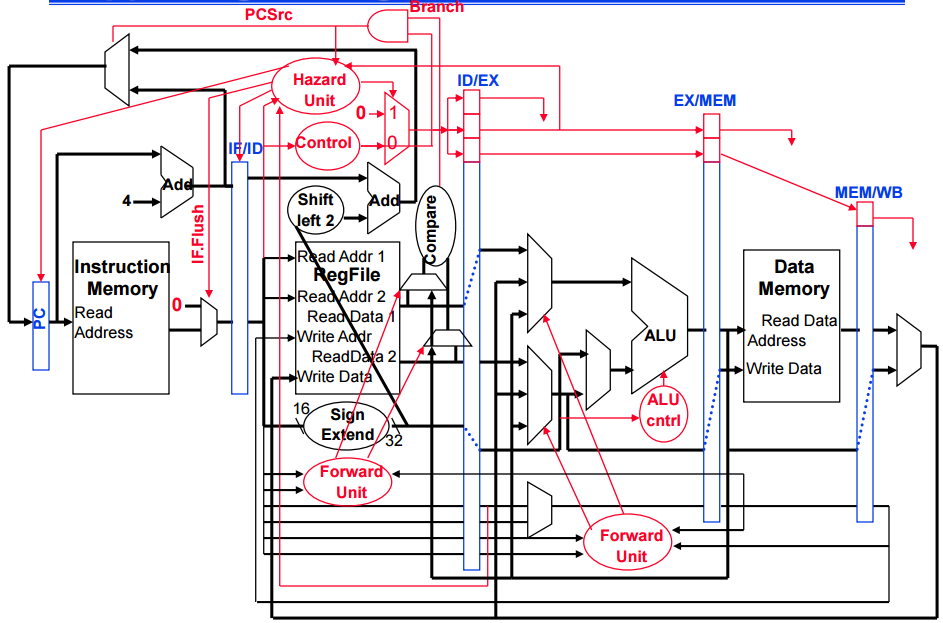

Instruction Execution in Pipeline
Parallel Execution in Pipeline
Data Hazards
Control Hazards
Structural Hazards
Pipeline control path: No hazard control
Pipeline control path: Hazard control
Hazard control in the MIPS Pipeline
This interactive graphic explains how hazards are technically handled in the MIPS pipeline. This graphic does not have interactive content for the basic parts of the technical implementation of the MIPS pipeline, but only the hazard control parts. Click here for a graphic that has information on other parts of the MIPS pipeline. Feel free to click parts of this graphic for information about individual parts.
The Hazard Unit plays a hand in globally handling hazards. It keeps the extra hazard bits for each stage in check, flushes the pipeline, and plays a role in updating the PC.
The Control Unit tells the branch what to update the PC with.
The forwarding units handle data forwarding. This one appears to forward branch values, so that the pipeline can branch before the branch instruction finishes all cycles of execution - minimizing the number of stalls needed.
The forwarding units handle data forwarding. This one appears to forward register values to the ALU, to ensure that the register values being used are correct and most recent.
The Branch component control which value the PC will update with. This could involve taking values from the ALU, or even branch prediction.
Sometimes, the pipeline will need to be flushed. For example, if branch prediction predicts the wrong branch, the pipeline will probably need to be flushed. This is controlled by the Hazard Unit.
The ALU Control unit tells the ALU which values it needs to process at the current cycle.
Some extra bits need to be added to the ID/EX stage state, to keep track of handling hazards.
Some extra bits need to be added to the EX/MEM stage state, to keep track of handling hazards.
Some extra bits need to be added to the MEM/WB stage state, to keep track of handling hazards.
